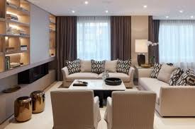

Soy un apasionado Diseñador de Interiores con 8 años de experiencia en el área.
Pero, antes que nada, soy un hombre de Dios, ya que mi fe es una parte fundamental en mi vida.
Creo en la importancia de la estética y la funcionalidad en cada proyecto, y trabajo arduamente para encontrar el equilibrio perfecto entre ambos.
Mi misión es que puedas disfrutar tu casa, compartir con los tuyos y vivir feliz sintiéndote en bienestar, todo esto bajo tu presupuesto.

Preguntas FrequentesQuienes somos:
Somos una empresa dedicada a la ambientacion de espacio
Como donde estan hubicados:
Estamos ubicados en Santiago de los caballeros y Moca
Cuanta experiencia tienen:
Contamos con 8 años de experiencia con incontables obras
Acerca de nosotros
-Somos una empresa dirigida por mi, creada para el diseño de espacios tanto empresariales como de hogares
haciendo un lugar futurita y contemporaneos pero a la vez con un toque de antaños que nos llene la memoria de recuerdos,
pero sobre todo espacios funcionales.
ContactoInstagram: @Revolucionary_space Faceboock: Revolucionary space Correo: Antony08@gmail.com Tel: 829-123-2222 Cel: 809-333-9999